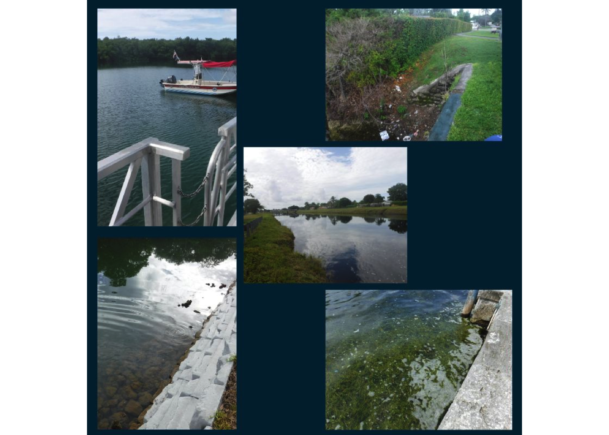

| Sample Site | Latitude | Longitude | Date and Time | Water Temperature | DO % | DO mg/L | Tubidity NTU | Salinity ppt | Pass or Fail | Enterococci MPN |
|---|---|---|---|---|---|---|---|---|---|---|
| Alhambra | 25.73798 | -80.28535 | 7/22/2024, 8:30:00 AM | 29.788 | 55.7 | 4.22 | 4.23 | 0.36 | Pass | 31 |
| Twin Lakes | 25.71820 | -80.29796 | 7/22/2024, 8:45:00 AM | 31.823 | 113.6 | 8.31 | 2.20 | 0.28 | Fail | 295 |
| Vizcaya | 25.74433 | -80.21064 | 7/22/2024, 9:55:00 AM | 31.636 | 67.4 | 4.31 | 0.21 | 25.62 | Pass | 20 |
| Tamiami | 25.73670 | -80.39553 | 7/22/2024, 8:26:00 AM | 29.580 | 69.2 | 5.27 | 0.29 | 0.25 | Fail | 122 |
| Snapper Creek | 25.69685 | -80.35603 | 7/22/2024, 9:13:00 AM | 28.702 | 18.5 | 1.43 | 0.64 | 0.26 | Fail | 86 |
| Virginia Key Lake | 25.74755 | -80.14568 | 7/22/2024, 10:15:00 AM | 30.857 | 75.3 | 4.76 | 0.25 | 32.48 | Pass | 15 |
